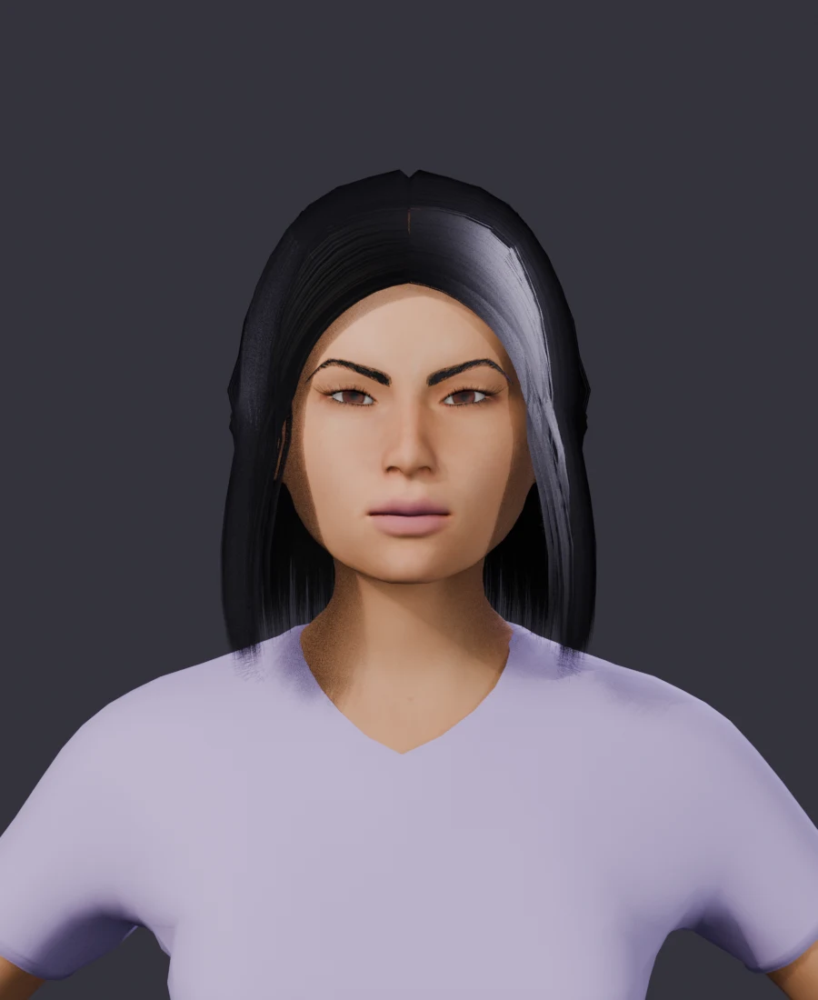
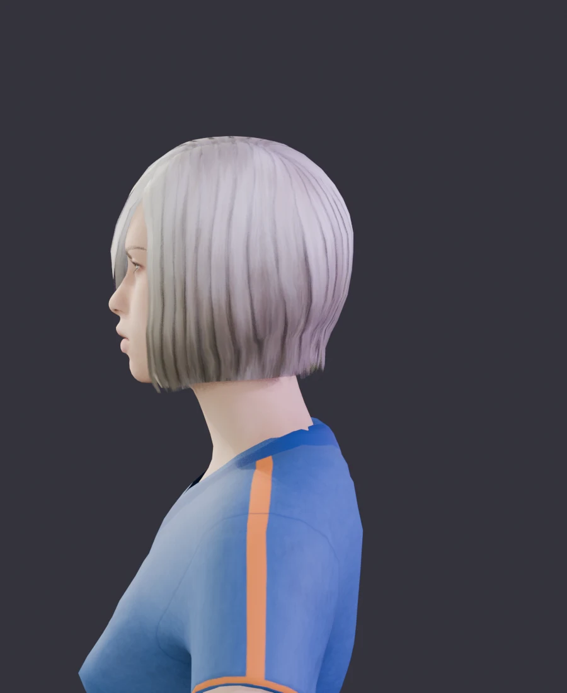

Rodada 2 · rosto pelas fotos
Personagem 3D da Evelym
Ajustes feitos pelas fotos que a Evelym mandou em 2026-11-22, todos por parâmetro no script
(scripts/personagem/gerar.py):
- rosto oval puxando para coração, mais estreito, com maçãs do rosto marcadas e mandíbula que afina;
- olhos amendoados castanho-escuros, com o canto de fora levemente para cima;
- sobrancelhas escuras e marcadas, com arco, e cílios escuros;
- nariz de dorso reto, lábios cheios com o arco do cupido marcado;
- pele morena clara, dourada;
- cabelo preto, liso, repartido ao meio, cortado na altura dos ombros.
Ainda falta (próximas rodadas):
- moletom lilás com capuz (a blusa lilás é provisória);
- sorriso e piscada, que dependem do pacote de expressões do MakeHuman;
- o cabelo com mais fios no alto da cabeça (hoje ele tem poucas faixas e parece um capacete de perto).


